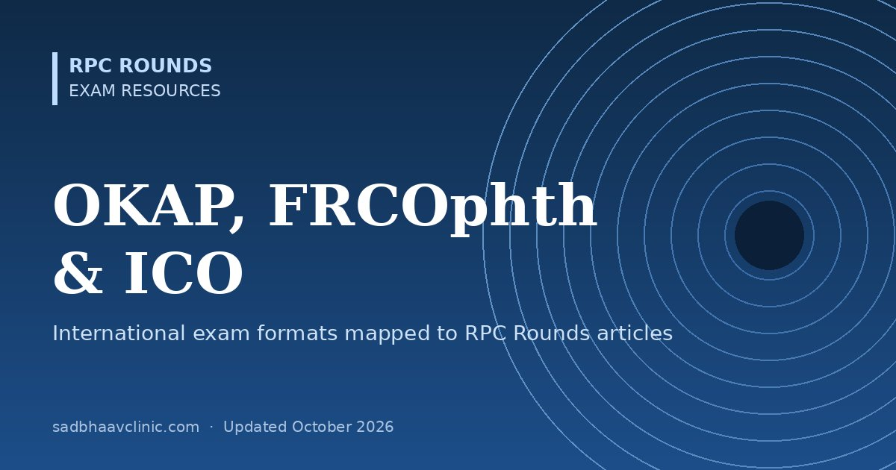

Last updated: October 2026
Short answer: the OKAP (American Academy of Ophthalmology), FRCOphth (Royal College of Ophthalmologists, UK) and ICO examinations test the same core ophthalmology, but in different formats. This page summarises each exam from its official information and shows which RPC Rounds articles help with which part. RPC Rounds is written mainly for Indian MS/DNB residents. It is not an official or complete review course for any of these exams, so use it alongside the recommended textbooks and the exam's own syllabus.
Exam formats were checked against the official AAO, RCOphth and ICO websites in October 2026. Formats, fees and dates change, so always confirm on the official site before you register.
| Exam | Run by | Format | Who takes it |
|---|---|---|---|
| OKAP | American Academy of Ophthalmology | 260 multiple-choice questions spread equally across the 13 BCSC sections; 4 hours 30 minutes of testing plus an optional 10-minute break; online | Residents in every year of training in the US and Canada. OKAP International uses the same 260-question format with remote proctoring and is open to residents and practising ophthalmologists worldwide. |
| FRCOphth | Royal College of Ophthalmologists (UK) | Part 1 (written), Refraction Certificate (practical), Part 2 Written, and Part 2 Oral (viva and OSCE) | UK ophthalmic specialist trainees, and other eligible candidates |
| ICO examinations | International Council of Ophthalmology | Standard Examinations (Visual Sciences; Optics, Refraction and Instruments; Clinical Ophthalmology), then the Advanced Examination | Ophthalmologists and trainees worldwide; taken in English |
OKAP questions are spread equally across the 13 sections of the AAO's Basic and Clinical Science Course (BCSC). The coverage column is our honest estimate of how much RPC Rounds offers for each section.
| Part | Official format | Useful RPC Rounds articles |
|---|---|---|
| Part 1 FRCOphth | Two multiple-choice papers of 90 questions each, two hours per paper, on the same day. Tests basic and clinical sciences and understanding of patient investigations; no clinical component. | Basic sciences, pharmacology, retinal layers, electro-oculography. Coverage of anatomy, pathology and statistics is limited, so rely on textbooks for these. |
| Refraction Certificate | A practical exam. The October 2025 New Delhi sitting had 10 OSCE stations: simulated retinoscopy (4), non-cycloplegic retinoscopy (2), subjective refraction (sphere and cylinder), lens neutralisation, and binocular balancing. | Retinoscopy tips, JCC, duochrome, optics lectures. Reading is no substitute for practising on real patients and a model eye. |
| Part 2 Written | Two multiple-choice papers of 90 questions each, delivered online, usually twice a year. Tests applied clinical knowledge across the curriculum. | Use the learning dashboard by subspecialty, plus landmark trials and gradings and staging systems. |
| Part 2 Oral | A structured viva (five 10-minute stations: investigations and data interpretation; two patient management stations; attitudes, ethics and responsibilities; audit, research, evidence-based practice and health promotion) and an OSCE (five 20-minute clinical stations: anterior segment; glaucoma and lid; posterior segment; strabismus and orbit; neuro-ophthalmology; plus a communication skills station). | History and case presentation, reading an OCT, reading a visual field, emergencies on call, spot the diagnosis. The ethics and UK practice stations are not covered here. |
| Paper | Official format | Useful RPC Rounds articles |
|---|---|---|
| Visual Sciences (Part A) | 120 single-best-answer questions in three hours. Anatomy of the eye and orbit, neuro-anatomy, physiology, biochemistry and cell biology, epidemiology and statistics, pathology and microbiology. | Basic sciences, layers in ophthalmology, genetics firsts, microbial keratitis. Limited coverage; textbooks are essential. |
| Optics, Refraction and Instruments (Part B) | 60 single-best-answer questions in one and a half hours. | Prentice's rule, vertex distance, duochrome, formulas in ophthalmology, instruments |
| Clinical Ophthalmology (Part C) | Offered after passing Visual Sciences and ORI (or a recognised equivalent). | Every subspecialty hub, the learning dashboard and the clinical pearls with self-test quizzes |
| Advanced Examination | Taken after the three Standard Examinations. Passing it together with a local face-to-face examination allows use of the post-nominal FICO. | Landmark trials, gradings, diagnostic criteria, classifications |
One change to note: the ICO states that from 1 January 2028 the Royal College of Physicians and Surgeons of Glasgow will no longer accept ICO examination qualifications as exemptions for its FRCS Ophthalmology examinations.
Planning to work abroad? See our guide to ophthalmology exams abroad (Gulf, UK colleges, ICO, Europe, USA, Australia and New Zealand).
Check your level with a timed 50-question mock: the OKAP-style mock (about four questions from each BCSC section) and the FRCOphth Part 1 and ICO basic sciences mock, the FRCOphth Part 2 Written mock, the ICO optics mock and the ABO WQE-style mock. Each gives a topic-wise score and explains every answer. For a much larger bank, see OKAT Decoded (10,200 original MCQs written for the Indian AIOS-OKAT, covering the same core curriculum).
The standard OKAP is for residents in US and Canadian programmes. The AAO's OKAP International uses the same 260-question format, is open to residents and practising ophthalmologists worldwide, and is taken with remote proctoring. Check the AAO website for eligibility and fees for your country.
Two multiple-choice papers of 90 questions each, two hours per paper, taken on the same day.
It is a practical OSCE. The October 2025 New Delhi sitting had 10 stations covering simulated and non-cycloplegic retinoscopy, subjective refraction, lens neutralisation and binocular balancing.
By passing the ICO Standard Examinations, then the Advanced Examination together with a local face-to-face ophthalmology examination.
No. It is a free teaching blog that covers much of the clinical content, but it does not replace the official syllabus, standard textbooks or practice in each exam's format.
Sources: AAO: OKAP exam, AAO: OKAP International, RCOphth: Part 2 Oral, RCOphth curriculum: examinations, ICO examinations.
📘 Want more exam-ready material? See Ophthalmology Explorer on Kindle, or browse all my books.
Looking for an eye specialist in Ahmedabad? Meet Dr. Dhaval Patel or book a consultation with Dr. Dhaval Patel.